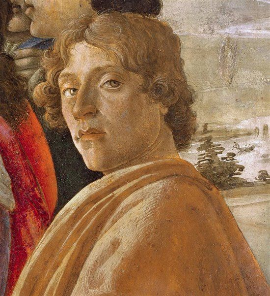
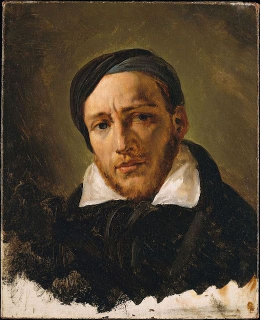
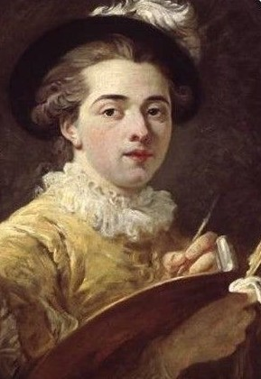
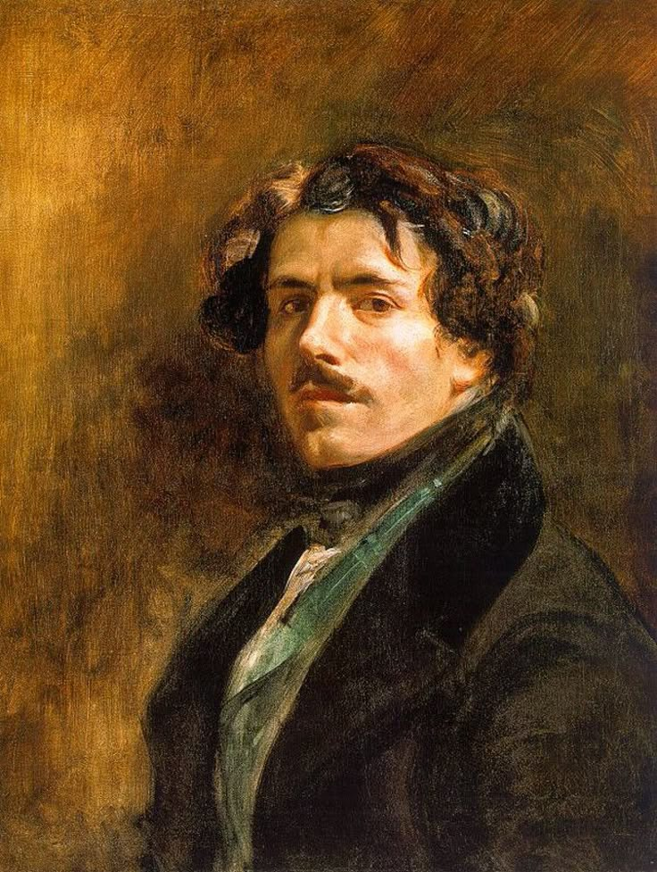
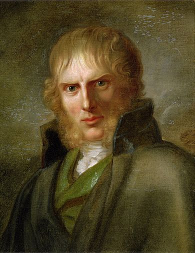
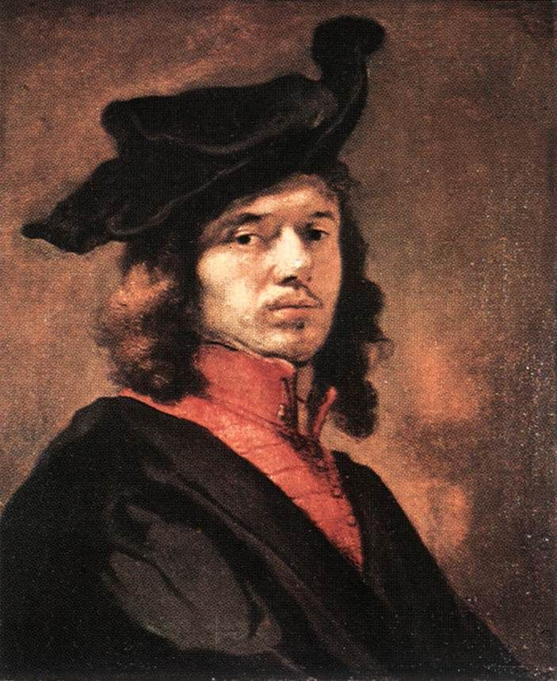
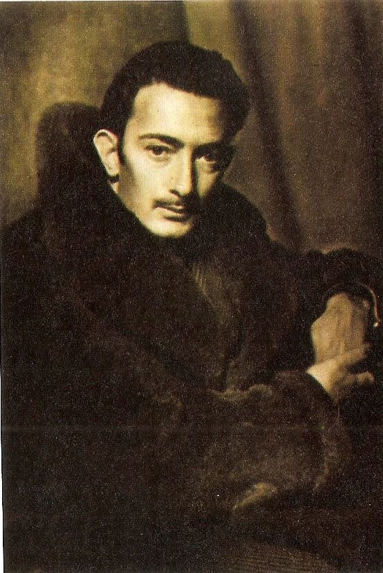
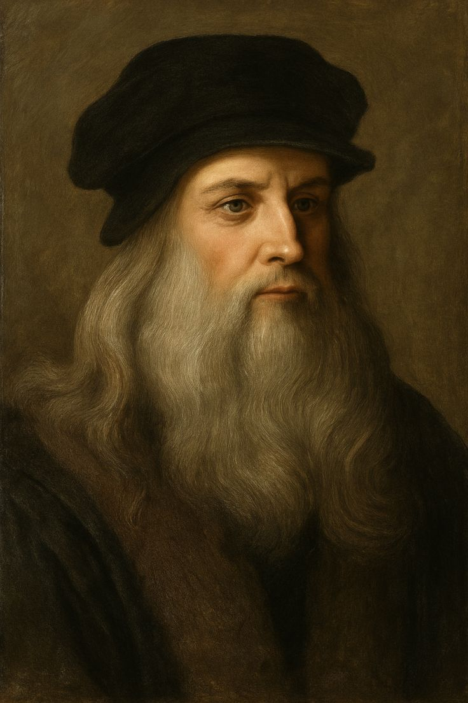
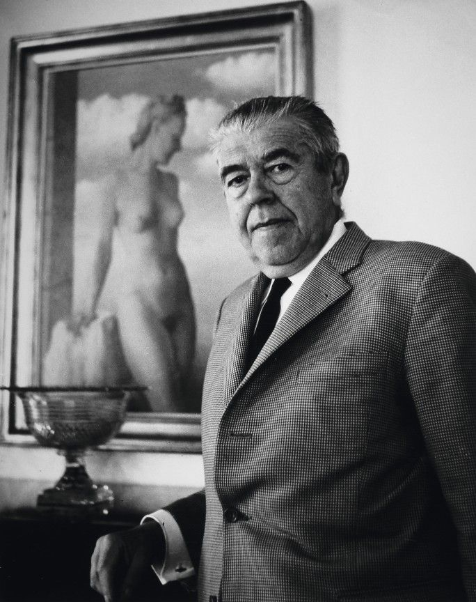

|  |
Sandro Botticelli |
1445-1510 |
Renacimiento Italiano |
El nacimiento de Venus (1485) |
Ver obra |
|  |
Théodore Géricault |
1791-1824 |
Romanticismo |
La balsa de la Medusa (1818-1819) |
Ver obra |
|  |
Jean-Honoré Fragonard |
1732-1806 |
Rococó |
El columpio (1767) |
Ver obra |
|  |
Eugène Delacroix |
1798-1863 |
Romanticismo |
La Libertad guiando al pueblo (1830) |
Ver obra |
|  |
Caspar David Friedrich |
1774-1840 |
Romanticismo |
El caminante sobre el mar de nubes (1818) |
Ver obra |
|  |
Johannes Vermeer |
1632-1675 |
Barroco Holandés |
La joven de la perla (1665) |
Ver obra |
|  |
Salvador Dalí |
1904-1989 |
Surrealismo |
La persistencia de la memoria (1931) |
Ver obra |
|  |
Leonardo da Vinci |
1452-1519 |
Renacimiento Italiano |
La Gioconda (1503-1506) |
Ver obra |
|  |
René Magritte |
1898-1967 |
Surrealismo |
El hijo del hombre (1964) |
Ver obra |